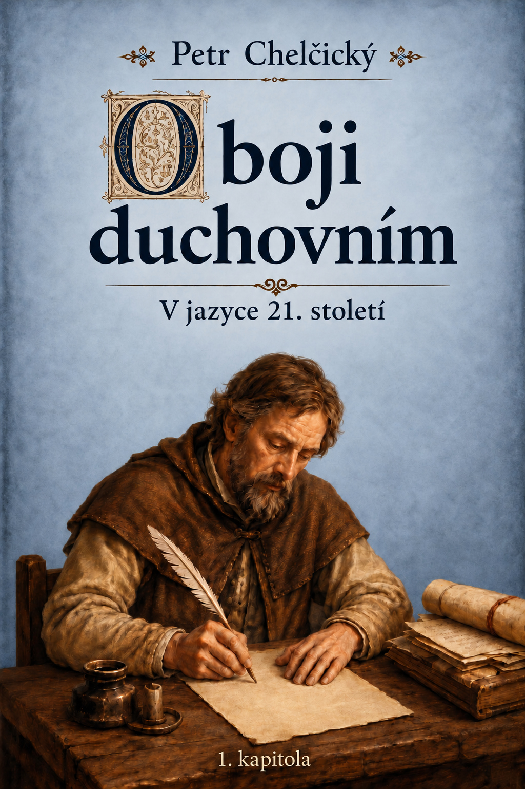

Část 1
Úvod
Traktát O boji duchovním patří k textům Petra Chelčického, v nichž se zvlášť zřetelně ukazuje jeho důraz na vnitřní zápas člověka…
Otevřít kapitolu →Webová edice v jazyce 21. století.

Traktát O boji duchovním patří k textům Petra Chelčického, v nichž se zvlášť zřetelně ukazuje jeho důraz na vnitřní zápas člověka…
Otevřít kapitolu →„Dále, bratři, posilte se v Bohu a v moci jeho síly. Oblečte se do Boží zbroje, abyste mohli obstát proti Ďáblovým úkladům…
Otevřít kapitolu →Tato webová edice zpřístupňuje první kapitolu traktátu Petra Chelčického O boji duchovním v jazyce 21. století…
Otevřít kapitolu →První kapitola traktátu O boji duchovním ukazuje Petra Chelčického jako autora, který bere vážně zápas člověka o pravdu, víru a naději…
Otevřít kapitolu →
Petr Chelčický
O boji duchovním – první kapitola
Digitální vydání: vcelkakorektorka.cz, 2026. Jazyková modernizace a poznámkový aparát © Pavel Dolejš 2026.
Otevřít →